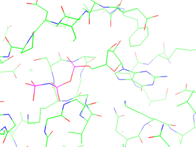
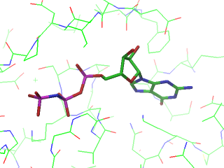
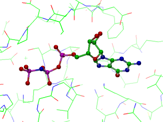
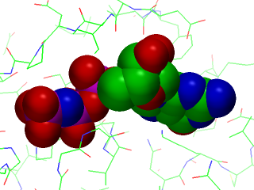
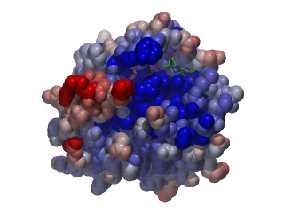
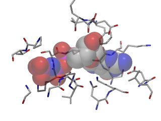
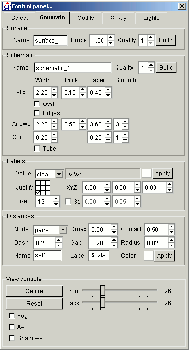
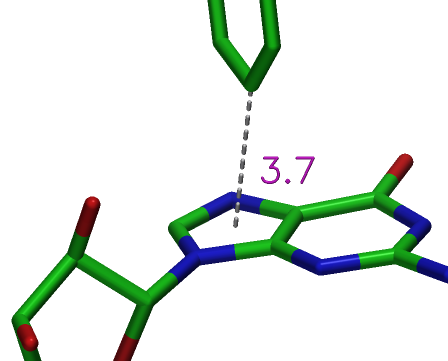
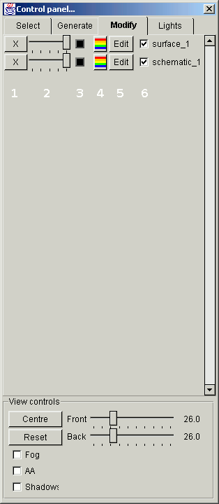
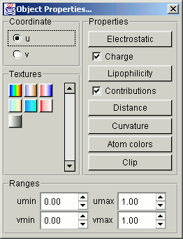

Mouse and Keyboard Controls
The view of the molecule that is loaded can be controlled using the
mouse. The interface is similar (but not identical to) a number of
other molecular graphics programs. In general only the left mouse
button is used for controlling the view, as the right mouse button is
reserved for bringing up the popup menu when OpenAstexViewer is running as
an applet.
|
LeftMouse+Drag
|
Rotate the view of the molecule around the current centre point.
This uses a straight forward 'virtual trackball' interface.
Dragging near the top of the screen will cause a rotation around
the z-axis.
|
|
Shift+LeftMouse+Drag
|
Scale the view of the molecule.
|
|
Ctrl+LeftMouse+Drag
|
Translate the centre of the view in the x,y plane.
|
|
Click on atom
|
Add that atom to the selection. If it is already selected, it is made unselected.
When you click on an atom it is labelled and more info about it is displayed
in the bottom left hand corner of the screen. Currently only one atom is labelled
at a time.
|
|
Click on background
|
Clear the current atom selection
|
|
'+' key
|
Widen the clipping planes slightly, making more of the molecule available.
[Note, this command is actually bound to '=' to avoid the user having to
press Shift on a conventional keyboard].
|
|
'−' key
|
Narrow the clipping planes slightly, making less of the molecule available.
|
|
'c' key
|
Centre on the currently selected atoms i.e. to centre on a particular atom
select it and then press 'c'.
|
|
'r' key
|
Reset the view back to the identity matrix, and recentre on all
non-solvent atoms.
|
|
'd' key
|
If exactly two atoms are selected, the a distance monitor is added
between the two atoms. This is a shortcut that avoid activating
distance monitors from the menus (described later).
|
|
Ctrk + 'r' key
|
Select all the atoms in any residues that contain selected atoms.
This is useful for centreing on a ligand. You pick an atom in it,
press Ctrl+r (which selects all of its atoms) and then press 'c' to
centre on those atoms.
|
Using the OpenAstexViewer Graphical User Interface
OpenAstexViewer version 2 has a more powerful graphical interface than the
first version, which was principally intended for use as a
preconfigured Applet running in a web page. The graphical user
interface allows most operations to be carried out without the
need for writing scripting language. This document provides a quick
tour of the user interface, and then a few step-by-step guides for
carrying out common operations.
Tour of the Menus
This section covers the menu bar at the top of the application.
One of the options in the menu produces a control which has many
more options and is covered later in the document.
- File
- This menu controls the loading and saving of molecules, maps
and images.
- Open structure...
- This option provides a file dialog that lets you choose a molecule
to load into OpenAstexViewer. Due to a limitation in the early versions of
Java, the file choice is not restricted to valid molecule types. All
files and directories are presented and you have to choose the
PDB or mol file that you wish to load.
- Open map...
- This option provides a file dialog that lets you choose an
electron density map to load into OpenAstexViewer. The same java feature
means that all files are displayed in the file dialog. You may choose
to load a CCP4 electron density map (with extension
.map)
or an Insight ASCII grid file.
- Open object...
- Load an OpenAstexViewer
tmesh graphical object from
a file.
- Run script...
- Run an OpenAstexViewer script. These should end with file extension
.script. The scripts can carry out arbitrary sets of
commands. As a convenience for developing scripts, the last script
that was executed by "Run script..." can be re-executed by clicking in
the graphics window and hitting the '!' key (reminiscent of the Unix
'!!' feature which reruns the last command).
- Save molecule
- Pick a molecule from the pop up menu and save it. You can give it
a different name, and change its type by providing a different
extension. [Note, the file is saved in whatever file name you
type, no extension is added by default]. If you overwrite the
file
file.pdb the previous copy of the file will be
renamed file.pdb_00 (and so on) so that you still have a
record of the old file.
- Save view...
- This option lets you write a script file that will recreate the
scene as you have it now. This includes display styles, colors,
graphical objects etc. It does this by writing a log of all the
scripting commands since the session began. It should be possible to
recreate a particular scene in OpenAstexViewer by either passing the
script on the command line, or loading it via the 'Run script...'
option. [Note, the absolute path of filenames are written into the
file, which means that you cannot move the original file without
editing the script to reflect the change. This is undesirable, and a
later version will attempt to fix this by making the paths relative to
where OpenAstexViewer is started].
- Save all
- This will overwrite all currently loaded molecules with their
current coordinates. Backup versions of the files will be created as
necessary.
- Close
- This lets you close a molecule and remove it from OpenAstexViewer.
Any graphical objects that were derived from it will not disappear.
- Write BMP...
- This lets you save an image of the current view. Only windows
bitmap files are supported, to maintain compatibility with Java
version 1. It is possible that a future version will try and determine
if the application is running with a newer version of Java which has
support for different image formats. If the file name that is selected
ends with '
.gz' then the file will be written through a
gzip compressor, which makes typical files about of the uncompressed
size.
The menu choices let you choose the size of the image that you want
to save. The 'Current size x?' options will preserve the
aspect ratio properly. The other sizes just allow for the easy
rendering of images that are larger than the window. It should be
noted that all of the standard options perform 2x2 supersampling to
provide some tantalising. On a PC with 256Mb of RAM you may not be
able to write images that are much more than 2000x1500 pixels
(4000x3000 before sampling). Rendering time is affected by size of
image, image complexity, shadows etc.. You should not have
antialiasing turned on in the image as this will cause an additional
oversampling of the image.
- Exit
- Close the application. [Note, you are not prompted to save
any molecules that have been changed. This is a bug, and will be
fixed in the near future].
- Select
- The Select menu is almost obsolete apart from the options to bring
up the Control Panel (described later) and the ability to quickly
select ligands in the structure.
- Popup...
- Bring up the main control panel. This should appear at the right hand
edge of the main graphics window. The controls are described in a separate
section later in this document.
- Clear
- This option unselects all atoms that are currently selected
(marked by a yellow dot). The same effect can be archived by clicking
on the background of the graphics window.
- Ligands
- This will select all atoms that aren't part of the standard makeup
of a protein structure (its as if the command '
select not
(aminoacid or DNA or ions or solvent)' had been executed).
- Ligand
- This menu provides separate entries for each non-standard residue
that appears to be a ligand. Its a useful way of selecting ligands, so
that you can see them and centre on them using '
View > Center on
Selection'.
- Display
- This menu controls the overall display of various entities within
OpenAstexViewer. There are more sophisticated ways of achieving most of
these actions in the control panel, but these are left here as they
are occasionally useful as a shortcut.
- Maps
- Turn on or off the display of all maps. If maps are displayed then
their contour levels can be controlled in the dialog obtained through
'
View > Contour Levels'. When maps are turned off all
contour levels are hidden.
- Symmetry
- Control whether or not symmetry atoms are generated when you
recenter OpenAstexViewer. Their is a global spacegroup and unit cell which
is determined from the first molecule that has symmetry defined. If
CCP4 electron density maps are loaded then the symmetry information is
taken from the first of these in preference.
- Bumps
- If bumps are selected then distance monitors are drawn between
selected atoms and any neighbours that are closer than the sum of
their vdW radii. The monitors are updated as you click on different
atoms.
- Solvent
- Turn off atoms that are in standard PDB solvent residues.
- Color
- This menu changes the coloring of sets of atoms and the
background of the main graphics window. All coloring options
apply to the
default selection. This is the
currently selected atoms, or all atoms if nothing is selected.
- By Atom
- Change the colors of atoms back to the OpenAstexViewer defaults.
Carbons are green (there is no way to change this default color -
sorry all you people who like gray carbons), oxygens are red,
nitrogens are blue, sulphurs are yellow, phosphorii are magenta,
halogens are a variety of other colors.
- By Chain
- Colors each chain from a selection of different colors. See the scripting language
documentation for the precise color details.
- By B-factor
- Colors each atom according to its b-value. See the scripting language
documentation for the precise color details.
- By B-factor Range
- Colors each atom according to its b-value. The color scale covers
the range from minimum to maximum b-value, rather than the predefined
range used in the previous menu option. See the scripting language
documentation for the precise color details.
- Change to
- Colors each atom with the color that was selected from the sub
menu.
- Background
- Changes the background color to that chosen. The graphics are
fogged to this color as well. To lessen the fogging effect you must
move the back clipping further away. This can be done either with the
'-' key or with the clipping plane tool in the control panel.
- View
- These command control certain aspects of the overall view
of the graphics window.
- Reset
- Resets the orientation matrix to the identity matrix, and scales
the viewport so that all the non-solvent atoms are visible.
- Center On Selection
- Adjusts the center point, width of the view and the clipping
planes so that the current selected atoms are visible.
- Clip Maps To Selection
- Clip any displayed electron density maps to the region around any
selected atoms. This is useful for tidying up electron density maps
that are a little noisy.
- Wide Bonds For Selection
- Change the display style for the selected atoms to wide lines.
This makes it easier to see the selected atoms. There are much more
sophisticated display styles available in the control panel.
- Contour Level Dialog...
- Pops up a set of controls that let you change the contour levels
for any maps that are loaded. Clicking the checkbox next to each
contour level turns that contour level on or off. Clicking the label
that displays the current contour level, will popup a color chooser
that lets you change the color of the contour level. The slider lets
the actual contour level value be changed.
- Measure
- Change the picking mode so that measurements can be made
between sets of atoms. By default nothing is being measured,
and picked atoms just get selected and labelled.
- Distances
- Each pair of atoms that is picked is joined by a distance monitor
that shows the distance between those atoms. An alternative
way to put distances in the view is to select exactly two atoms,
and then press the 'd' key. This will create a distance monitor
between the two atoms.
- Angles
- Each set of three atoms that is picked will get an angle monitor
which displays the angle between the three atoms in degrees.
- Torsions
- Each set of four atoms that is picked will get a monitor which
displays the torsion angle defined by the four atoms, in degrees.
- Clear Distances
- Clears all the distance monitors that are currently displayed.
- Clear Angles
- Clears all the angle monitors that are currently displayed.
- Clear Torsions
- Clears all the torsion angle monitors that are currently displayed.
Tour of the Control Panel
Select Tab
The main part of the graphical user interface is within the control
panel. As described above, this is activated by choosing
Popup... from the Select menu. The menu bar is at the top
of the graphics window if OpenAstexViewer is running as an application or
is available on a popup menu if running as an applet.
This section will talk through the control panel using the PDB
structure 621p as an example. To load the structure
you can either specify it as an argument to a command line script e.g.
OpenAstexViewer.bat r:\621p.pdb
or open it by File > Open Structure... from the menu bar.
When you have loaded the structure get the control panel with
Select > Popup.... At this stage the control panel should look
something like the image below left.
The control panel has a number of tabs that allow the selection of
sets of atoms, customisation of their display styles and the generation
and modification of graphical objects.
The Select tab lets you choose sets of atoms, and
apply display styles to them. The top half of the Select
tab contains two sections that will select sets of atoms. Clicking on
the symbol will expand the structure to
show the protein chains that it contains. Chains whose identifier is
the space character are labelled with an '_'. These can be expanded
further to show the residues, and these can be expanded to show the
atoms that the residue contains. The image above right shows what this
would look like after expanding down to the N-terminal methionine in
621p.
Clicking on the name part of the structure browser
(e.g. r:\621p.pdb or Chain _) will change
the selection status of those atoms in the graphical display. The
action is controlled by the three buttons at the top of the
tab. If this is set to Select then all atoms in the item
that is picked will be selected (i.e. a yellow dot will be drawn on
them). If the mode is set to Append then the picked
items atoms will be selected in addition to any atoms that are already
selected (this lets you easily build up composite groups of atoms). If
the mode is set to Exclude then the picked items atoms
will be unselected, but all other atoms will be left alone.
To the right of the structure browser is another similar object,
which is labelled Builtins. This contains sets of useful
predefined selection statements that can be applied to many different
structures. For instance, the Atoms group lets you select
atoms according to their element. The Residues group
contains all the common aminoacid residue names. Sphere
lets you select groups of atoms that are within a certain distance of
the currently selected atoms. Contact lets you select
atoms whose sum of vdW radii are within a certain distance of one
another.
The other groups let you select other useful subsets of
atoms. The Whole residue feature will select all atoms
in any residue that has at least one atom selected. The Whole
molecule feature will select all atoms in a connected section
that have at least one atom selected. The feature that is picked is
affected by the selection mode at the top of the tab in the same way
as picking atoms in the structure browser.
Sets of atoms can be picked from the graphical display as well.
For instance, you might want to select the atoms in a ligand that you
can see in the display. One way to do this would be to select a single
atom in the display and then click on Whole Residue in
the Builtins list. This should select the whole ligand
residue (if it is all in one residue like in 621p.pdb).
Once you have built up a selection of atoms the controls in the
Display as section can be used to change the display
styles for the those atoms. The available display styles for atoms are
Lines, Cylinders, Sticks and Spheres. Clicking the  button next to a display style will
turn that display style on for the selected atoms. Clicking the button next to a display style will turn that
display style off for the selected atoms. The controls to the right of
each display style will change the radii for the selected atoms.
button next to a display style will
turn that display style on for the selected atoms. Clicking the button next to a display style will turn that
display style off for the selected atoms. The controls to the right of
each display style will change the radii for the selected atoms.
Selected atoms can be lablleled using the label control. The
menu provides a selection of useful labelling formats for the
atoms. See the scripting
language documentation for the meaning of the format expressions.
The final section at the bottom of the control panel is labelled
View controls. This is visible in all tabs of the control
panel. Hitting the Centre button will centre the view on
the currently selected atoms. This does not change the rotation
matrix. If no atoms are selected then the graphics display centres on
all atoms. The Reset button will reset the view to
centre on all non-solvent atoms, and will reset the rotation matrix to
the identity matrix. The sliders labelled Front and Back
let you adjust the position of the clipping planes. The numbers are distances
in front and behind the centre point in Å's.
The final three buttons in this section control various graphical
attributes. The Fog button should rarely be used as most
objects will automatically depthcue/fog themselves into the background
color (there is no way to stop this at the moment, but the degree of
fog can be reduced by moving the Back clipping plane
further back). The AA button will apply 2x2 supersampled
antialiasing to the graphics display. The Shadows button
will turn on simple shadow casting for the scene. This can be left on
if desired but will considerably slow down rendering times
(particularly if used in conjunction with the AA button).
Display Styles and Renderer Settings
This section shows some images that can be easily made for the ligand
in 621p.pdb. With the structure loaded centre on the
bound ligand. You can do this by picking an atom in it (the phosphate
groups are quite obvious) and choosing the Whole residue
feature from the Builtins table. Alternatively, expand
the structure browser down to Chain _ and scroll through
the list of residues to 167. Selecting this should
highlight the ligand. You can now press the centre button to centre on
the ligand. You will notice some gray lines near the ligand. This is
automatically generated symmetry environment, you should probably turn
this off by unchecking Display > Symmetry on the main
graphics window menu.
|  |
 |
| Standard line display. Lines are drawn in width 2 for visibility. |
Cylinder display. Note, cylinders are drawn
analytically, not made of triangles. |
|  |
 |
| Sticks display. Lines are drawn in width 2 for visibility. |
Sphere display. Note, spheres are drawn as high quality
bitmaps, not made of triangles. |
Some Examples
This section gives step by step instructions for generating some more
complicated images.
|

|
- Select
Aminoacid from the builtins
- Choose
Color by B-factor from the main color menu
- Choose
Spheres+
- Select
Solvent from the builtins
- Choose
Lines-
- Select
Residue 167
- Choose
Cylinders+
- Check
Shadows on
|
|
Protein displayed as spheres, colored by B-factor.
Ligand displayed as cylinders, drawn with shadows.
|
|
|

|
- Centre on ligand as before
- Select
Atoms > Carbon from the builtins
- Change
Color to grey
- Select
Residue 167
- Choose
Spheres+
- Choose
Lines-
- Choose
Transp 160
- Select
Contact 0.5 from the builtins
- Choose
Cylinders+
- Select
r:\621p.pdb
- Choose
Lines-
- Check
Shadows on
|
|
Carbons colored grey. Protein within 0.5Å contact distance of
ligand displayed as cylinders. Ligand displayed as transparent
spheres, all with shadows.
|
|
Generate Tab
This tab contains controls for generating graphical objects. Graphical
objects are constructed from atom positions, but after this are
independent of them. For instance, they won't be turned off if the
atoms that were used to generate them are turned off.
There are two principal types of graphical objects in OpenAstexViewer.
These are molecular surfaces and protein cartoons (schematics). The
controls for creating both of these types of objects are described
in this section.
Molecular Surfaces
|  |
Molecular surfaces are created for the atoms that are selected in the
graphics display. The surface algorithm is grid based and produces a
triangulated surface. If you want to have more than one surface at the
same time, you need to change the name of the surface in the
Name: box.
The quality setting currently has no effect for molecular
surfaces. They are always generated at the best resolution that can be
made within certain limits of grid spacing and memory usage.
The Probe: control lets you specify the probe
radius that is used for the molecular surface generation. The
default is 1.5Å but some people prefer to use 1.4Å.
When you have the settings you want, press the build button and
after a few seconds the molecular surface should appear. If it isn't
quite what you wanted, modify the atom selection or the probe radius
and regenerate the surface. As the surface name is the same as before
it will overwrite the previous surface.
The surface is generated in white by default. The properties of the
surface can be modified extensively using controls which are described
in the Modify tab. These will be covered in detail in the next
section.
|
Example Molecular Surfaces
Protein Cartoons
The main body of controls on the Generate tab is concerned with the
production of protein cartoons (or schematics as they are sometimes
known). OpenAstexViewer supports most of the common styles for schematic
display.
The schematic generation acts on the currently selected atoms by
default, or if nothing is selected it will work on all aminoacid
residues in the currently loaded structures. The Name:
box lets you specify the name of the graphical object that will be
created. If you want more than one schematic object you must give them
different names.
The Quality: spinbox lets you specify the overall
quality of the schematic that is generated. It controls how many guide
points are placed along the spline path, and the number of points
around the perimeter of elliptical segments. Quality 1 has the least
triangles and draws fastest. Higher numbers produce more triangles and
somewhat better pictures.
The grid of controls beneath here control the shape and dimensions
of the various different parts that are used to make up a protein
schematic. Helices are drawn with a ribbon that follows the path of
the Cα atoms. β-strands are drawn as arrows with an arrow
head that shows the direction of the polypeptide chain. Other regions
(coil) are drawn as a smoothed narrow tube that passes near the
Cα coordinates.
The Oval checkbox determines whether or not helical
ribbons are drawn as oval cross section ribbons. The
cylinders checkbox controls whether or not cylinders are
placed along the edge of a helical ribbon (this is not done if the
ribbons are drawn with oval cross section). The cylinders look nice,
but cannot be drawn transparently. If you think you want to make a
schematic transparent then you should probably not use the cylinders
option.
The Tube checkbox controls whether the schematic is drawn
as all tube. These can be used for creating a solid Cα trace
that looks as if it has been constructed from bent wire. You
will probably want to adjust tube smoothing to 0 to ensure that the
tube passes through the Cα positions.
The colors of the triangles that make up the protein schematic are
taken from the Cα atoms at the time the schematic is created. A
popular way of showing schematics is as a rainbow from blue at the
N-terminus to red at the C-terminus. This shows the progression of the
polypeptide chain. To achieve this, color the protein atoms by rainbow
before generating the schematic.
The table below shows some of the protein schematics that can be
generated for 621p.pdb. They also show the effects of
varying some of the parameters, for each of the different secondary
structure features.
Labels and Distances
The two final groups of controls in the generate tab allow you
to specify sets of labels and distances for the structures.
The label controls will apply labelling to the currently selected
atoms. You can control the string that they are labelled with bu
choosing the an entry from the Value drop down menu. If you choose
clear the labels are cleared for the selected atoms. The
format codes are described in the
scripting language documentation. You can put ordinary text in the
label box as well. Characters preceeded by a \ will be drawn in
Symbol font. The justify box lets you specify which part of the string
will be used to justify the text. The XYZ buttons let you specify
offsets on the screen after the text is transformed.
The 3d checkbox lets you choose whether or not you use
a 3d font (which is constructed of cylinders). The button next to the
Apply button will let you change the color of the labels.
There is currently no way to set the controls according to the
current label style of a set of atoms. If you have labels with
different settings you will need to recreate all the values for each
set.
The distance controls let you specify sets of distances on the
structure. The distance controls use sets of atoms that have been
placed on the selection stack. To push a set of atoms onto the stack,
you select what you want and then hit the Insert key on
the keyboard. This will unselect the atoms. You can then push a second
set of atoms onto the stack. The last set can be retrieved by hitting
the Delete key. This pops the stack. Keep hitting
Delete to clear the stack completely.
There are four different distance modes available on the top left menu
of the distance controls.
- Pairs
- This variant uses two sets of atoms from the stack. It will
generate a distance label between all pairs of atoms from set one and
set two. The label is only added if the distance between the atoms is
less than the value in Dmax and the distance minus the sum of the vdW
radii is less than the value in Contact.
- Nbpairs
- This is similar Pairs except that the additional constraint that
the atoms must be separated by at least 3 bonds is used.
- Bumps
- This mode uses only the top set of atoms from the atom stack.
All pairs of atoms are considered for a distance monitor if they
satisfy the Dmax, Contact and 3 bond rules.
- Centroid
- This mode uses two sets of atoms from the atom stack. The distance
monitor is drawn between the cartesian center of the two sets of
atoms.
The dash, gap and radius controls let you specify the size of the
dashed lines that are used in the distance monitors. It should be
noted that the dashes are drawn with a space of half the gap length at
each end. The dash and gap values are adjusted slightly to achieve
this effect. This stops large gaps appearing at one end or the other
of the distance monitor.
The label controls how the monitor is labelled. The distance is
substituted for any C language style floating point format. For
example, the distance 3.456 would be shown as 3.4 if format was %.1f or
3.45 if format was %.2f.
The labels on the distance monitors are controlled by the current
settings of the label controls. If you want to change how the label is
formatted, change the label settings and then reapply the distances.
You can create multiple sets of distances by changing the name
of the set. The only way to delete a set of distances is to clear the
distance stack and recreate the distances.

The image above shows a custom distance label in OpenAstexViewer. It
was created by selecting the atoms of the five membered guanine ring,
and hitting the Insert key. Then the atom of the Phe ring
was selected and the Insert key was pressed again. This
means there are two sets of atoms on the selection stack.
Now, the settings for the font were changed to purple, 3d, size
0.5, radius 0.05 justification top left, and the distance label was
changed to %.1f. This should give rise to a distance monitor like that
shown.
Modifying Graphical Objects
The third tab in the control panel lets you change the attributes of
graphical objects. Each object that you have created will appear as a
separate entry. In the scrollable area of the Modify tab.
|  |
This is how the Modify tab would look if you had generated a molecular
surface and protein schematic with their default names. Each object
has its own entry and a number of controls.
From left to right across each entry the controls have the following
actions.
- The button marked with an '
X' will delete the
graphical object.
- The slider to the right of the delete button will
vary the transparency of the object. Slider full to the right is
completely opaque, with positions to the left being more transparent.
- The black checkbox turns on the display of backfacing triangles.
Backfacing triangles (i.e. facing away from the viewer) are usually
turned off as they cannot be seen, and this helps rendering
performance. However, if you have clipped into a surface or similar
object you may want to turn on backfacing triangles so that it doesn't
appear that the back of the object is missing. When the box is black
backfacing triangles are not displayed. When checked it goes white,
indicating that backfacing triangles are displayed.
- The multicolored button to the right of the backface triangle
control will bring up a color chooser control that lets you change the
color of the object.
- The
Edit button brings up another control that lets
you change calculate properties and apply texture maps for more
sophisticated coloring schemes.
- The final checkbox controls the display of the object. When the
box is checked the object is displayed.
|
Editing Object Properties
 The
Edit button on the Modify tab will bring up a control
that lets you generate properties for graphical objects as a function
of atomic properties. These properties can be shown on graphical
objects using texture mapping which is also controlled here.
The coordinate group lets you choose which texture coordinate you
wish to calculate property values for. The u coordinate can be
thought of as the x value of an index into an image, and the
v coordinate as the y value of the index into an
image. The u,v pairs are used to choose the color of the pixel
according to the property value.
The properties section lets you choose which property to calculate
for the texture coordinate. The properties are calculated using the
atoms that are currently selected. The possibilities are
- Electrostatic
- Calculate a simple Coulomb electrostatic potential. The function
uses a distance² dielectric constant. If the
Charge
checkbox is selected standard partial charges are applied to the
aminoacid atoms prior to the electrostatic calculation. If you wish to
supply your own charges these can be done with charge
scripting commands, and you should uncheck the Charge
box.
- Lipophilicity
- Calculate a simple lipophilic potential. The atom based
contributions for aminoacids are automatically applied if the
Contributions checkbox is selected. The contributions are
stored in the charge attribute of atoms, so you can
supply your own in a similar fashion to the electrostatic potential.
- Distance
- This will calculate the distance to the nearest selected atom and
store that value at each point in the graphical object. The texture
coordinates are normalised so that they become 1.0 at 8Å. If you
have generated
Distance texture coordinates for v
then any pixels that lie outside the range are not drawn. This lets
you generate very accurately clipped molecular surfaces, based on
proximity to sets of atoms.
- Curvature
- This property estimates the curvature of an object using a
smoothed function of the number of atoms within 8Å of the point
on the graphical object. It is really only useful for molecular
surfaces, and only makes sense when you generate the curvature using
the same set of atoms that was used to generate the surface. It is a
useful way of showing pockets in the binding site of a protein.
- Atom colors
- This function does not generate texture coordinates, but seems to
make sense included in this part of the user interface. The function
will map the color of the nearest atoms onto the molecular
surface. The colors are blended to achieve a pleasing effect for
molecular surfaces.
- Clip
- This also does not generate texture coordinates. Instead, it clips
the object at the u or v = 1 line (depending on which
coordinate you have selected). This removes triangles and vertices
that lie outside this region. It will also accurately interpolate
texture coordinates along triangle edges, and split them into
subtriangles, to recreate the boundary. This can significantly speed
up the rendering of objects that have large amount of triangles
removed through texture clipping. It is particularly useful for
permanently clipping parts of a molecular surface. This will make a
partial surface cast better shadows [Note, once clipped, an object
cannot be unclipped in this version].
Once, texture coordinates have been generated, you can apply a texture
from the Textures. The origin of the texture coordinates
is at bottom left, with u running to the right and v
running upwards.
After calculating texture coordinates the minima and maxima of the
property values will be shown in the spinboxes at the bottom of the
control. You can change the values here to vary how the texture map is
fitted to the calculated properties.
Examples of Texture Mapped Properties
Lights
The controls in the lights tab allow you to change the lighting model
of the scene. To select a light, click on it on the circular control.
It should turn yellow when it is selected, and the controls to the
right will reflect its current settings. You can drag the light around
on the circular control to reposition it. You can also slide the
various intensity controls to change its strength and highlight
contribution. OpenAstexViewer currently supports a global material type so
all objects are illuminated using the current light settings.
The ambient control is for the whole scene, not for each light.
Too much ambient light will make the shading very washed out.
The Cartoon button will switch to a lighting model that produces a
simple cartoon style shading model. This only works well for spheres
at the moment, but lets you produce simple color pictures like those
of the Molecule of the Month pages at the RCSB web site.
{kind=link}
{kind=link}
{kind=link}
{kind=link}
{kind=link}
{kind=link}
{kind=link}
{kind=link}
{kind=link}
{kind=link}